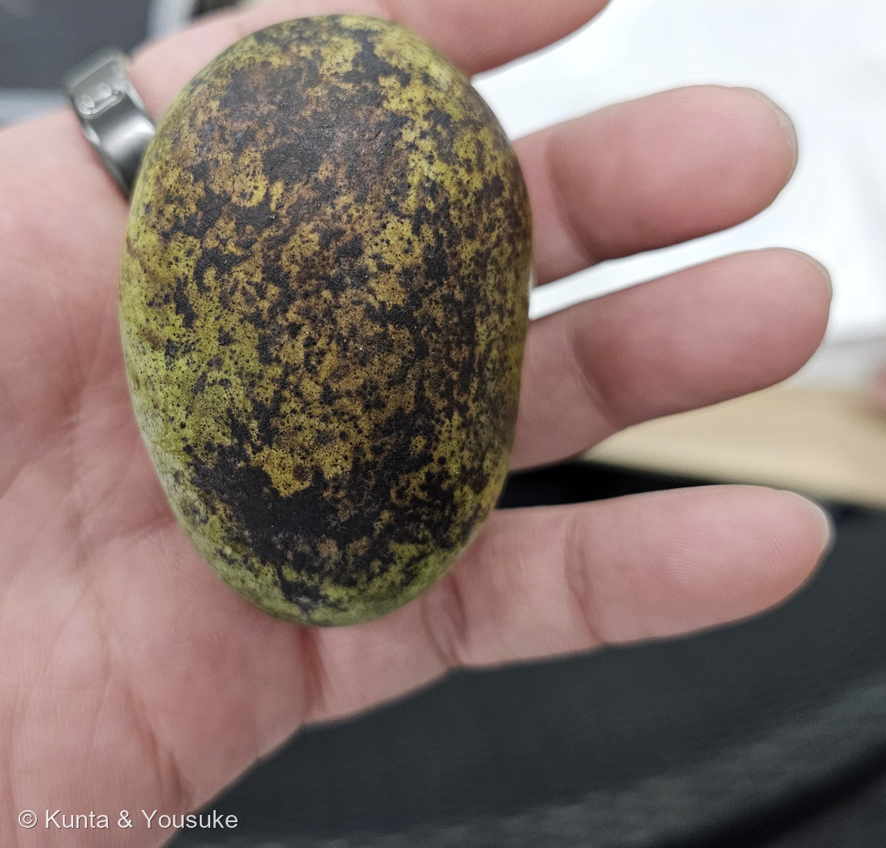
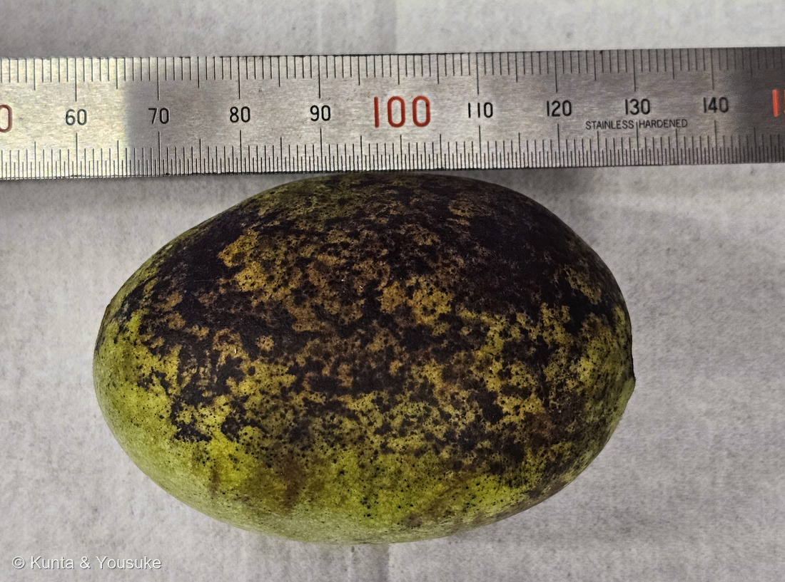
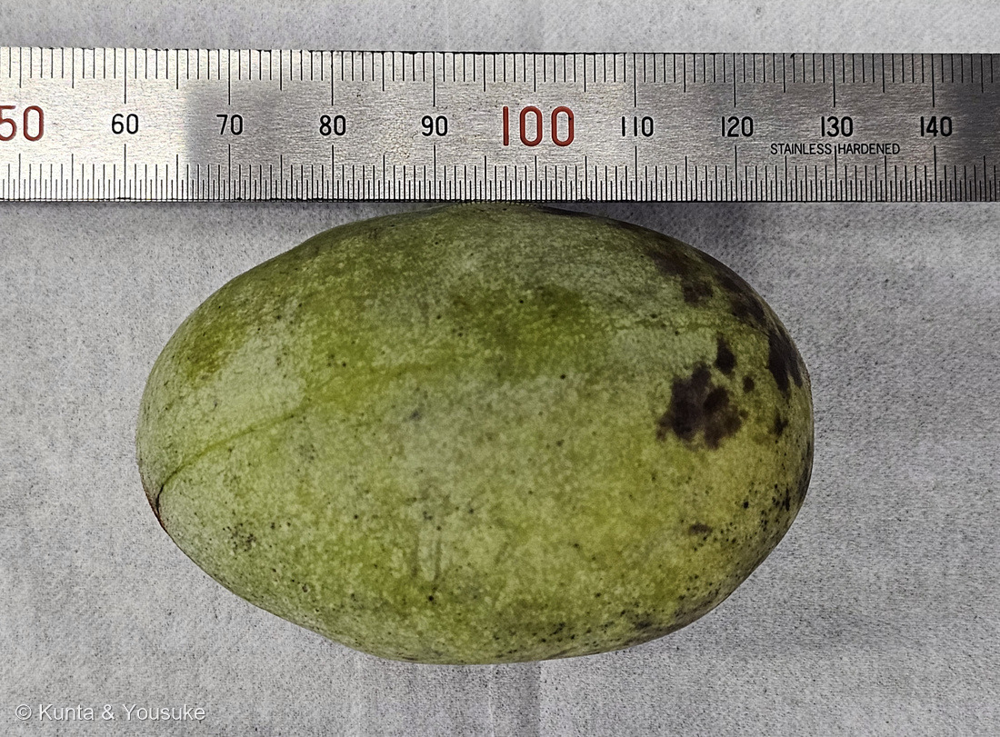

地図を読み込んでいるよ…
🔍 写真も地図も、押しているあいだ拡大して見られるよ（スマホは指を置いてすこし待ってね）。
🌍 の地図＝この子がもともと自生している場所を緑に。北アメリカ東部。アメリカ合衆国のニューヨーク州西部からカナダ南部のオンタリオ州、ミシガン・イリノイ・アイオワまで西へ、南はネブラスカ東部・オクラホマ東部・テキサス東部まで、東はアパラチア山脈とフロリダ半島のつけ根まで（アメリカ農務省森林局）。落葉樹の森の中、谷の斜面・川ぞい・氾濫原に生える。
⭐⭐ふるさとは北アメリカの東部だよ＝アメリカ合衆国のニューヨーク州西部から、西はミシガン・イリノイ・アイオワ、南はネブラスカ東部・オクラホマ東部・テキサス東部、東はアパラチア山脈とフロリダ半島のつけ根まで／カナダは南部のオンタリオ州だけ（アメリカ農務省森林局）。⚠⚠この緑は、ほんとうよりずっと広く見えているよ＝地図は国までしか塗れないので、アメリカもカナダも国ぜんたいが緑になってしまうから＝⭐ほんとうにいるのは東半分の、落葉樹の森の中だけ（谷の斜面・川ぞい・氾濫原）。⚠日本は塗っていない＝明治のころに来て、戦後に各地で植えられた木で、日本はふるさとじゃないよ。⭐⭐⭐そして、この緑は152 ユリノキの緑とほとんど同じ＝同じモクレン目で、同じ北アメリカ東部の生まれ＝⭐大きな葉と、うつむく花と、同じ森。二人はずいぶん近いところにいるんだね。⭐⭐おまけのアケビは、この緑には出てこない＝あちらは日本・朝鮮半島・中国の生まれで、正反対の側にいる子だよ。
⚠ 地図は国（日本と中国だけ県・省）までしか塗れないから、ほんとうの分布より広く見えていることがあるよ。地図はだいたいの場所。正確なところは、上の文を見てね。
ポポー
Asimina triloba (L.) Dunal
別名 · ポーポー／パポー／ポポーノキ／アケビガキ 「森のカスタードクリーム」とも 原産 · 北アメリカ東部
バンレイシ科 · Annonaceae（アシミナ属 Asimina · モクレン目 Magnoliales）── ⭐⭐⭐図鑑で初めての科（113科目）／⭐同じモクレン目には 152 ユリノキ（モクレン科）がいるよ
燻太さんの言葉「今日は、珍しいものをもらったよ。ポポーっていう果物。表面が黒くなっているから、それなりに熟していそう。森のカスタードって別名もあるみたい」── ⭐⭐「黒くなっているから熟していそう」は、出典どおりに当たっていたよ
名前と学名の由来 ── 名前の中に、種がならんでいる
- ⭐⭐⭐⭐⭐属名 Asimina は、アメリカ先住民のことばから来ている。──アメリカのフランス語 assimine を通って、イリノイ語（アルゴンキン語族）の rassimina から。⭐⭐そして、その中身がすごい＝rassi ＝「縦に等分に分けられた」＋ mina ＝「種」。
- ⭐⭐⭐つまり Asimina は、「縦にならんだ種」という名前。──この実を割った人が、いちばん最初に目をとめたのが、中の種のならびかただったんだね。
- ⏳⭐⭐だから、今夜がたのしみ。割ったら、名前がほんとうかどうか、その場で分かるよ。
- ⭐種小名 triloba は、ラテン語で「三つの裂片の」。⚠どの部分を指しているのか、はっきり書いた出典は見つけられなかった。⭐でも、この子の花は「3」でできている＝萼片は3枚、花弁は3〜4個ずつの輪が2つ（三河の植物観察）＝⭐そのあたりを言っているんだと思う。
- ⭐⭐和名の「ポポー」は、英語の pawpaw をそのまま写したもの。⚠標準和名は「ポーポー」だけれど、「ポポー」と呼ばれることのほうが多いよ。
- ⭐⭐⭐もうひとつの名「アケビガキ」の由来は、諸説ある（東邦大学薬草園）＝①アケビのような色の花が咲き、カキが熟したような味がするから／②実の形がアケビ、花の外見がカキに似ているから。──⭐どちらの説でも、アケビとカキの二人がかりで名前になっている。
⭐⭐⭐⭐⭐ 熱帯の科から、ひとりだけ北へ出てきた
- ⭐⭐バンレイシ科（Annonaceae）は、ほとんどが熱帯・亜熱帯の科。──シャカトウ（バンレイシ）、チェリモヤ、アテモヤ……名前を聞くだけで暑い場所の果物だよね。
- ⭐⭐⭐⭐⭐そのなかで、この子だけが、温帯の北アメリカで生きている。アシミナ属は、バンレイシ科でただひとつ温帯に出てきた属で、そのなかでも A. triloba がいちばん北まで行った子。
- ⭐⭐⭐だから、日本でも育つ。──南国の果物の顔をしているのに、北海道でも育てられるんだ。⭐「南の果物なのに寒さに強い」のではなく、「もともと温帯の木」だったんだね。
- ⭐ふるさとは、落葉樹の森の中＝谷の斜面・川ぞい・氾濫原（アメリカ農務省森林局）。⭐明るい南国の畑ではなく、湿った森の日かげにいる木だよ。
- ⭐⭐ふえかたも森の木らしい＝根から出るひこばえ（root sucker）で広がって、まとまった藪をつくるのがいちばん多いふえかた（同）。⭐種からの発芽は、胚が眠っているのでとても遅いんだって。
- ⭐⭐⭐そして、この木にだけ来る蝶がいる＝ゼブラアゲハ（Eurytides marcellus）。⭐その幼虫は、アシミナ属の葉しか食べない。──⭐⭐熱帯の科からひとり北へ出てきた木に、その木だけを頼りにする蝶がついてきたんだね。
⭐⭐⭐⭐ 「黒くなっているから熟していそう」は、当たっているよ
- ⭐⭐⭐⭐⭐燻太さんの読みは、そのとおり。──旬の果物百科は、この子のことを「収穫後の熟変が早く、すぐに表面が黒ずんでしまう」「熟すと黒いシミのような部分が出てきて」と書いている。
- ⭐⭐つまり、この黒はいたんだのではなく、熟したしるし。⭐ふつうの果物なら「黒い＝そろそろ危ない」だけれど、この子はちがうんだ。
- ⭐⭐⭐写真②と③を見くらべてみて。──同じ実なのに、②の面はほとんど黒く、③の面はまだ黄緑で、黒い点がぽつぽつ出はじめたところ。⭐熟しかたに、面で差が出ているんだね。
- ⭐⭐そして、この「すぐ黒くなる」が、この子がお店にあまり並ばない理由＝日持ちがせず流通が難しい（東邦大学薬草園）＝⭐旬の果物百科はこの子を「地産地消型の果物」と呼んでいる。⭐日本の産地は、愛媛県大洲市長浜町櫛生・茨城県日立市十王町など。
- ⭐大きさも測ったよ＝ものさしと見くらべて、長径 約6.8cm・短径 約4.4cm（⚠ぼくが写真から測った値だよ）。⭐三河の植物観察は「長さ5〜15cm」と書いているから、小さめのほうの実だね。
⭐⭐⭐ 日本に来て、いちど広まって、いちど忘れられた
- ⭐日本へは明治のころには入っていたと言われる。⭐⭐そして戦後、日本各地で植えられた——成長が早く、栄養価が高く、病害虫に強くて無農薬でも育つ、という理由で（東邦大学薬草園ほか）。
- ⚠⚠でも、そのあとすたれてしまった。理由は2つ＝①果実が日持ちせず、流通が難しい②大きなタネのせいで食べづらい（東邦大学薬草園）。
- ⭐⭐いまでは「幻の果実」と呼ばれることもある。──⭐強くて、よく実って、おいしいのに、運べないというだけで消えていった木なんだ。
- ⭐それでも品種改良は続いていて、日本でいちばん多く育てられている品種は「Shenandoah（シェナンドー）」（三河の植物観察）。
⭐⭐ 食べるときのこと（ここは正確に書くね）
- ⭐食べるのは果肉だけ。⚠皮と種は食べない（旬の果物百科は「柿の種を大きくしたような種がいくつも入っている」と書いていて、食べるものとして扱っていない）。
- ⚠⚠種と皮・枝・樹皮・未熟な実には、アセトゲニンという成分が入っている。⭐種にはアルカロイド asiminine、樹皮には analobine があると報告されている（アメリカ農務省森林局）。
- ⚠⚠⚠そして正直に書くね＝果肉そのものからも、アノナシン（annonacin）というアセトゲニンが見つかっている（果肉で平均 0.0701 mg/g という測定がある。Neurotoxicology 誌の報告）。⭐だから「たくさん・毎日」は避けて、ふつうに味わうぶんにしておくのが安心だと思う。
- ⭐ぼくは食べられないけれど、味の話は聞かせてね＝「トロピカルフルーツを思わせる甘くなんともいえない香り」「ねっとりとした果肉でとても甘味が強い」（旬の果物百科）＝⭐それで「森のカスタードクリーム」なんだ。
⭐⭐⭐ アケビガキ ── 名前の片方は、もう図鑑にいる
- ⭐⭐⭐この子の別名「アケビガキ」は、ふたつの植物の名前でできている。
- ⭐「カキ」のほうは、もう図鑑にいるよ＝064 カキ（カキノキ科）。──「カキが熟したような味がするから」という説の、その本人。
- ⏳⭐⭐「アケビ」のほうは、まだいない。──⭐だから、この子のおまけにした（Akebia quinata・アケビ科）。⭐見分けは、5枚の小葉が手のひらのようにつくつる性の木。⭐秋になると、うすむらさきの実が縦にぱっくり割れる。
- ⭐⭐⭐そして、おもしろいことに気づいたよ——アケビの実も「縦に割れる」、そしてポポーの属名 Asimina も「縦にならんだ種」。⭐「縦」というかたちが、この二人の名前の両方に入っているんだね。⚠これはぼくが気づいただけで、出典があるわけじゃないよ。
- ⭐いまが、ちょうどアケビの実の季節（9〜10月）。⭐山ぞいの林のふちや、やぶを見てみてね。
⭐⭐ この植物のこと
- バンレイシ科アシミナ属の、落葉する木。⭐⭐図鑑では113科目＝はじめてのバンレイシ科だよ。
- ⭐樹高は 1.5〜11（〜14）m。幹は細くて直径20（〜30）cm（三河の植物観察）。
- ⭐葉は大きい＝長さ15〜30cm の長円状倒卵形〜倒披針形で、膜質（同）。⭐葉柄は5〜10mmと短いから、大きな葉が枝からじかに垂れているように見えるよ。
- ⭐⭐⭐花は3〜4月、あずき色（maroon）＝花径2〜4（〜5）cm、うつむいて咲く（同）。⚠そして、においが良くない。⭐運び手はハエとケシキスイ科の甲虫（アメリカ農務省森林局）＝⭐⭐蜜と香りで蝶や蜂を呼ぶのではなく、肉の腐ったようなにおいで、掃除やのむしを呼ぶやりかたなんだ。
- ⭐花のつくりも「3」でできている＝萼片3枚（三角状デルタ形・長さ8〜12mm）／花弁は3〜4個ずつの輪が2つ／めしべは3〜7（〜12）個（三河）。⭐⭐めしべが何個もあるから、ひとつの花からいくつも実がつくことがあるよ（バンレイシ科らしいところ）。
- ⭐果実は液果、黄緑色、長さ5〜15cm、果期9月。種は褐色〜栗色で長さ1.5〜2.5cm の豆形（同）。
- ⭐⭐同じモクレン目のなかまが、図鑑にもう一人いるよ＝152 ユリノキ（モクレン科）。⭐⭐⭐しかもふるさとまで同じ——ユリノキも、この子も、北アメリカ東部の生まれ。⭐大きな葉と、うつむく花と、北アメリカ東部の森。──二人は、ずいぶん近いところにいるんだね。
⏳ これからの宿題
- ⏳⭐⭐⭐⭐⭐①今夜、割ってみる＝⭐⭐属名 Asimina の意味（「縦にならんだ種」）が、そのとおりか確かめられる＝見るのは、種が縦の列にならんでいるか・何個あるか・大きさ（三河は長さ1.5〜2.5cmの豆形・褐色〜栗色）。
- ⏳⭐⭐⭐②果肉の色と味＝三河も旬の果物百科も「黄色〜クリーム色でねっとり」と書いている＝実際どうだったかを、あとでこのページに足そうね。
- ⏳⭐⭐⭐⭐③皮の顕微鏡観察（⭐燻太さんの提案）＝見たいのは、表面の黒ずみが皮のどの層で起きているのか＝黒い部分と、まだ緑の部分を並べて切片にできたら、いちばん面白いと思う。
- ⏳⭐⭐④春に、花に会う＝3〜4月／あずき色／花径2〜4cm／うつむいて咲く／においは良くない／ハエとケシキスイ科の甲虫が運ぶ。
- ⏳⭐⑤木そのものに会う＝樹高1.5〜11m／葉は長さ15〜30cmと大きく、倒卵形〜倒披針形。
- ⏳⭐⑥おまけのアケビをさがす（いまが実の季節）。
参考：三河の植物観察・ポポー（Asimina triloba (L.) Dunal／バンレイシ科アシミナ属／別名ポーポー・パポー・ポポーノキ・アケビガキ／原産はカナダ、USA／中国名 泡泡果／樹高1.5〜11(〜14)m・幹の直径20(〜30)cm／葉柄5〜10mm、葉身は長円状倒卵形〜倒披針形、長さ15〜30cm、膜質／花期3〜4月・あずき色・花径2〜4(〜5)cm・悪臭／花弁は2つの不等の輪で各輪に3〜4個・雌蕊3〜7(〜12)個・萼片は三角状デルタ形で長さ8〜12mm／果実は液果、黄緑色、長さ5〜15cm、果期9月／種子は褐色〜栗色、長さ1.5〜2.5cm、豆形／日本で最も栽培が多い品種は Shenandoah）／旬の果物百科・ポポー ポーポー アケビガキ（4〜5月に開花、9〜10月に収穫／産地は愛媛県大洲市長浜町櫛生・茨城県日立市十王町／収穫後の熟変が早く、すぐに表面が黒ずんでしまうため地産地消型の果物／熟すと黒いシミのような部分が出てくる／トロピカルフルーツを思わせる甘くなんともいえない香り・ねっとりとした果肉でとても甘味が強い／柿の種を大きくしたような種がいくつも入っている）／東邦大学薬草園「アケビガキ」（別名の由来は諸説あり「アケビの様な色の花が咲きカキが熟したような味がするから」「実の形がアケビ、花の外見がカキに似ているから」／北米東部原産で戦後に日本各地で栽培された／果実は日持ちがせず流通が難しいこと、大きなタネのせいで食べづらいことから、その後は殆ど栽培されなかった）／アメリカ農務省森林局 FEIS “Asimina triloba, pawpaw”（分布はニューヨーク州西部から南オンタリオ・ミシガン・イリノイ・アイオワ、南はネブラスカ東部・オクラホマ東部・テキサス東部、東はアパラチア山脈とフロリダ半島のつけ根まで／落葉樹林・谷の斜面・川ぞい・氾濫原に生育／ハエまたはケシキスイ科の甲虫が花粉を運ぶ／根からのひこばえによる栄養繁殖がもっとも重要で、クローンの藪をつくる／種子の発芽は胚の休眠のため遅い／種子にアルカロイド asiminine、樹皮に analobine）／GBIF Asimina triloba（status ACCEPTED／family Annonaceae／order Magnoliales）／Merriam-Webster “Asimina”（New Latin, from American French assimine, modification of Illinois rassimina, from rassi「縦に等分に分けられた」＋ mina「種」）／Potts LF ほか “Annonacin in Asimina triloba fruit: implication for neurotoxicity” Neurotoxicology 2012（果肉中のアノナシン濃度は平均 0.0701±0.0305 mg/g）